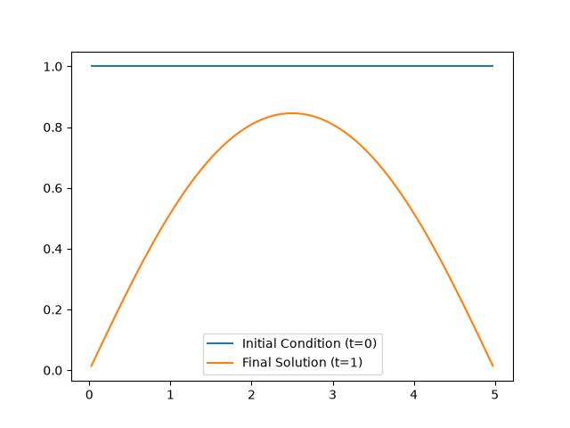
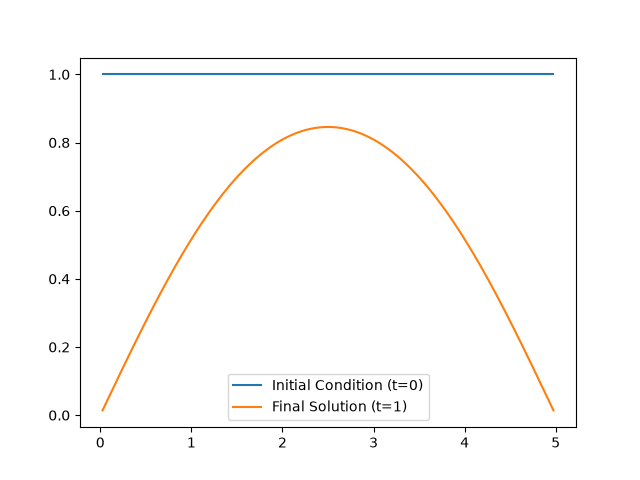
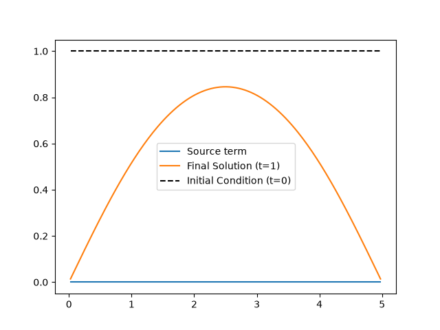
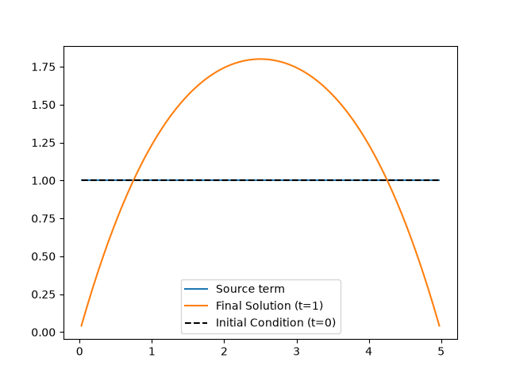
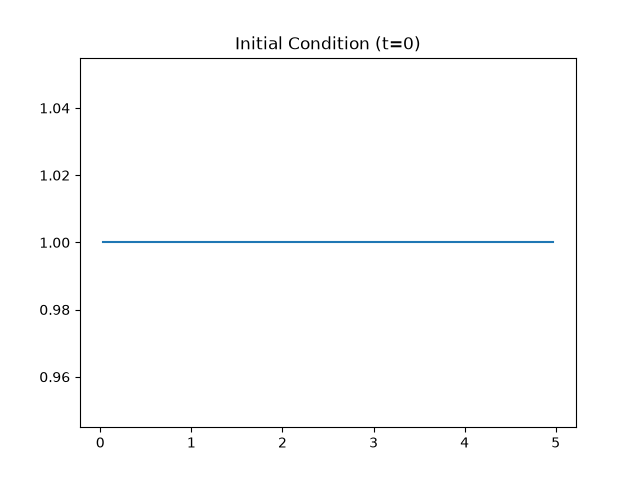
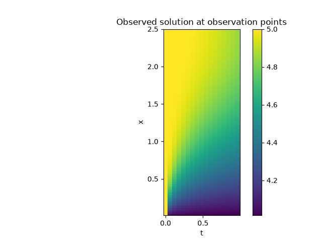
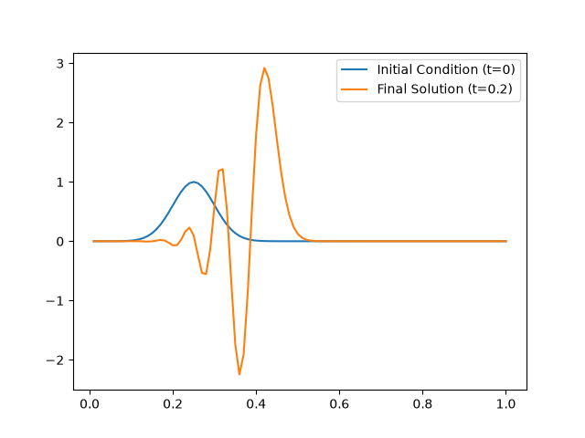

Note
Go to the end to download the full example code.
Time Dependent Linear PDE#
In this example we show how to set up various Time Dependent Linear PDE models.
First we import the modules needed.
import sys
sys.path.append("..")
import matplotlib.pyplot as plt
from cuqi.array import CUQIarray
from cuqi.model import PDEModel
from cuqi.geometry import Continuous1D, Continuous2D
from cuqi.pde import TimeDependentLinearPDE
import numpy as np
Model 1: Heat equation with initial condition as the Bayesian parameter#
# 1.1 Prepare PDE form
dim = 200 # Number of solution nodes
L = 5 # 1D domain length
max_time = 1 # Final time
dx = L/(dim+1) # Space step size
cfl = 5/11 # The cfl condition to have a stable solution
max_iter = int(max_time/(cfl*dx**2)) # Number of time steps
time_steps = np.linspace(0, max_time, max_iter+1,
endpoint=True) # Time steps array
Dxx = (np.diag(-2*np.ones(dim)) + np.diag(np.ones(dim-1), -1) +
np.diag(np.ones(dim-1), 1))/dx**2 # Finite difference diffusion operator
grid = np.linspace(dx, L, dim, endpoint=False)
# PDE form function, returns a tuple of (differential operator, source_term, initial_condition)
def PDE_form(initial_condition, t): return (
Dxx, np.zeros(dim), initial_condition)
# 1.2 Create a PDE object
PDE = TimeDependentLinearPDE(
PDE_form,
grid_sol=grid,
time_steps=time_steps,
method="forward_euler")
# 1.3 Create the PDE model
# Set up geometries for the model
domain_geometry = Continuous1D(grid)
range_geometry = Continuous1D(grid)
# Create the model
model = PDEModel(PDE, range_geometry, domain_geometry)
# 1.4 Look at the solution for some initial condition
parameters = CUQIarray(np.ones(model.domain_dim), geometry=domain_geometry)
solution_case1 = model.forward(parameters)
parameters.plot(label="Initial Condition (t=0)")
solution_case1.plot(label=f"Final Solution (t={max_time})")
plt.legend()
<matplotlib.legend.Legend object at 0x7fa93b728500>
Model 2: Same as Model 1 but using Backward Euler method for time stepping#
# 2.1 Create a PDE object
dt_approx = 0.006 # Approximate time step
max_iter = int(max_time/dt_approx) # Number of time steps
time_steps = np.linspace(0, max_time, max_iter+1,
endpoint=True) # Time steps array
PDE = TimeDependentLinearPDE(
PDE_form,
grid_sol=grid,
time_steps=time_steps,
method="backward_euler")
# 2.2 Create the PDE model
model = PDEModel(PDE, range_geometry, domain_geometry)
# 2.3 Look at the solution for the same initial condition as in `Model 1`
parameters = CUQIarray(np.ones(model.domain_dim), geometry=domain_geometry)
solution_case2 = model.forward(parameters)
parameters.plot(label="Initial Condition (t=0)")
solution_case2.plot(label=f"Final Solution (t={max_time})")
plt.legend()
# 2.4 Print the relative error between the two solutions
print("Relative error between the forward and backward Euler solution:"),
print(np.linalg.norm(solution_case2-solution_case1) /
np.linalg.norm(solution_case1))

Relative error between the forward and backward Euler solution:
0.0007493614944247973
Model 3: Same as Model 2, but using varying time step size#
# 3.1 Create a PDE object
# Time steps array
time_steps1 = np.linspace(0, max_time/2, max_iter+1, endpoint=True)
time_steps2 = np.linspace(max_time/2, max_time,
int(max_iter/2)+1, endpoint=True)
time_steps = np.hstack((time_steps1[:-1], time_steps2))
PDE = TimeDependentLinearPDE(
PDE_form,
grid_sol=grid,
time_steps=time_steps,
method="backward_euler")
# 3.2 Create the PDE model
model = PDEModel(PDE, range_geometry, domain_geometry)
# 3.3 Look at the solution for the same initial condition as in Model 2 & 1
parameters = CUQIarray(np.ones(model.domain_dim), geometry=domain_geometry)
solution_case3 = model.forward(parameters)
parameters.plot(label="Initial Condition (t=0)")
solution_case3.plot(label=f"Final Solution (t={max_time})")
plt.legend()
# 3.4 Print the relative error between this solution and the forward Euler solution
print("Relative error between the forward and the time-step-varying backward Euler solution:"),
print(np.linalg.norm(solution_case3-solution_case1) /
np.linalg.norm(solution_case1))

Relative error between the forward and the time-step-varying backward Euler solution:
0.0005696958067739836
Model 4: Same as model 2 but the source term is the Bayesian parameter#
# 4.1 Prepare PDE form
time_steps = np.linspace(0, max_time, max_iter+1, endpoint=True)
# PDE form function, returns a tuple of (differential operator, source_term, initial_condition)
initial_condition = np.ones(dim)
def PDE_form(source_term, t): return (Dxx, source_term, initial_condition)
# 4.2 Create a PDE object
PDE = TimeDependentLinearPDE(
PDE_form,
grid_sol=grid,
time_steps=time_steps,
method="backward_euler")
# 4.3 Create the PDE model
model = PDEModel(PDE, range_geometry, domain_geometry)
# 4.4 Look at the solution for zero source term
parameters = CUQIarray(np.zeros(model.domain_dim), geometry=domain_geometry)
solution_case4_a = model.forward(parameters)
parameters.plot(label="Source term")
solution_case4_a.plot(label=f"Final Solution (t={max_time})")
initial_condition = CUQIarray(initial_condition, geometry=domain_geometry)
initial_condition.plot(label="Initial Condition (t=0)",
linestyle='--', color='black')
plt.legend()
# 4.5 Print the relative error between this solution and the solution from Model 2
print("Relative error between Model 2 and Model 4 solutions:"),
print(np.linalg.norm(solution_case4_a-solution_case2) /
np.linalg.norm(solution_case2))
# 4.6 Set the source term to a non-zero value
parameters = CUQIarray(np.ones(model.domain_dim), geometry=domain_geometry)
solution_case4_b = model.forward(parameters)
plt.figure()
parameters.plot(label="Source term")
solution_case4_b.plot(label=f"Final Solution (t={max_time})")
initial_condition.plot(label="Initial Condition (t=0)",
linestyle='--', color='black')
plt.legend()


Relative error between Model 2 and Model 4 solutions:
0.0
<matplotlib.legend.Legend object at 0x7fa930d182f0>
Model 5: Same as model 2 but with non-trivial observation operator#
# 5.1 Create a PDE form and object
# PDE form
def PDE_form(initial_condition, t): return (
Dxx, np.zeros(dim), initial_condition)
# PDE object with observation operator
time_steps = np.linspace(0, max_time, max_iter+1,
endpoint=True) # Time steps array
grid_obs = grid[:int(dim/2)] # Observe at half of the spatial grid points
time_obs = time_steps[::10] # Observe every 10 time steps
PDE = TimeDependentLinearPDE(
PDE_form,
grid_sol=grid,
time_steps=time_steps,
method="backward_euler",
grid_obs=grid_obs,
time_obs=time_obs,
observation_map=lambda u, grid, times: u+4) # A simple observation map
# adding 4 to the solution
# 5.2 Create the PDE model
# Updated range geometry to match the observation points
range_geometry = Continuous2D((time_obs, grid_obs))
model = PDEModel(PDE, range_geometry, domain_geometry)
# 5.3 Compute the solution for the same initial condition as in `Model 1`
parameters = CUQIarray(np.ones(model.domain_dim), geometry=domain_geometry)
solution_case5 = model.forward(parameters)
parameters.plot()
plt.title("Initial Condition (t=0)")
plt.figure()
im = solution_case5.plot()
plt.title("Observed solution at observation points");
plt.ylabel("x")
plt.xlabel("t")
plt.colorbar(im[0])


<matplotlib.colorbar.Colorbar object at 0x7fa93b6cbd10>
Model 6: First order wave equation with initial condition as the Bayesian parameter#
The model set up is similar to the one presented in https://aquaulb.github.io/book_solving_pde_mooc/solving_pde_mooc/notebooks/04_PartialDifferentialEquations/04_01_Advection.html
# 6.1 Prepare PDE form
dim = 100 # Number of solution nodes
L = 1 # 1D domain length
max_time = .2 # Final time
dx = L/(dim+1) # Space step size
dt_approx = .005 # Approximate time step
max_iter = int(max_time/dt_approx) # Number of time steps
Dx = -(np.diag(1*np.ones(dim-1), 1) - np.diag(np.ones(dim), 0)) / \
dx # FD advection operator
Dx[0, :] = 0 # Setting boundary conditions
time_steps = np.linspace(0, max_time, max_iter+1,
endpoint=True) # Time steps array
# PDE form function, returns a tuple of (differential operator, source_term, initial_condition)
def PDE_form(initial_condition, t): return (
Dx, np.zeros(dim), initial_condition)
# 6.2 Create a PDE object
PDE = TimeDependentLinearPDE(
PDE_form,
grid_sol=grid,
time_steps=time_steps,
method="forward_euler")
# 6.3 Create the PDE model
# Set up geometries for the model
grid = np.linspace(dx, L, dim, endpoint=True)
domain_geometry = Continuous1D(grid)
range_geometry = Continuous1D(grid)
# Create the model
model = PDEModel(PDE, range_geometry, domain_geometry)
# 6.4 Look at the solution for some initial condition
def initial_condition_func(x): return np.exp(-200*(x-L/4)**2)
initial_condition = initial_condition_func(grid)
parameters = CUQIarray(initial_condition, geometry=domain_geometry)
solution_case6 = model.forward(parameters)
parameters.plot(label="Initial Condition (t=0)")
solution_case6.plot(label=f"Final Solution (t={max_time})")
plt.legend()

<matplotlib.legend.Legend object at 0x7fa938156d20>
Total running time of the script: (0 minutes 0.596 seconds)